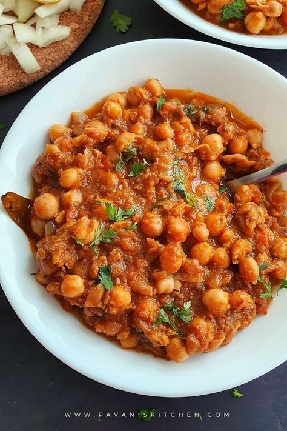

INGREDIENTS
- 1 1/2 cups all-purpose flour
- 1 cup sugar
- 1/2 cup unsweetened cocoa powder
- 1 tsp baking powder
- 1/2 tsp baking soda
- 1/4 tsp salt
- 2 eggs
- 1/2 cup vegetable oil
- 3/4 cup milk
- 1 tsp vanilla extract
- 1/2 cup hot water
- 1/3 cup finely chopped hazelnuts
- 1 cup unsalted butter (softened)
- 1/2 cup Nutella
- 2 1/2 cups powdered sugar
- 1/4 cup heavy cream (adjust consistency)
- 1 tsp vanilla extract
- Pinch of salt
- 8-10 Ferrero Rocher chocolates
- 1/3 cup crushed wafers or hazelnuts
- Chocolate ganache (optional for drip)
Recipe

- Step 1: Prepare the Cake
- - Preheat oven to 350°F (175°C). Grease and line two 8-inch round cake pans.
- - In a bowl, sift together flour, cocoa powder, baking powder, baking soda, and salt.
- - In another bowl, whisk eggs, sugar, oil, milk, and vanilla until well combined.
- - Add the dry ingredients to the wet mixture gradually. Stir in hot water and mix well.
- - Fold in chopped hazelnuts. Pour batter into pans and bake for 25–30 minutes.
- - Let the cakes cool completely on wire racks.
- Step 2: Make the Nutella Frosting
- - Beat butter until creamy. Add Nutella and beat until smooth.
- - Gradually add powdered sugar, vanilla, salt, and cream. Beat until light and fluffy.
- Step 3: Assemble the Cake
- - Place one cake layer on a serving plate. Spread a layer of Nutella frosting.
- - Optionally, add crushed Ferrero Rocher or wafers in the middle layer.
- - Place the second layer on top. Frost the entire cake with remaining frosting.
- Step 4: Decorate
- - Drip chocolate ganache on the sides if desired.
- - Top with whole Ferrero Rocher chocolates and sprinkle crushed hazelnuts or wafers.
- - Chill for 30 minutes before slicing. Enjoy the rich chocolate-hazelnut delight!